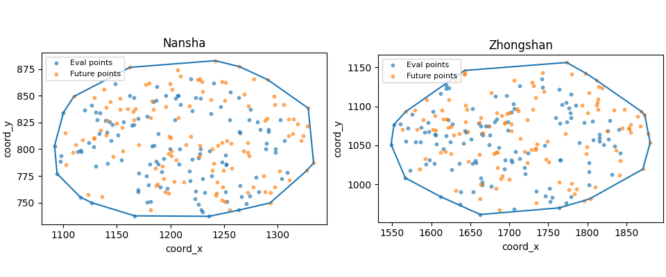

Note
Go to the end to download the full example code.
Build city boundary polygons from forecast points#
This example teaches you how to use GeoPrior’s
make-boundary utility.
Unlike the plotting scripts, this command is a spatial-support builder. It reads forecast point locations and turns them into simple boundary polygons that can later be reused by grid, exposure, or map-oriented workflows.
Why this matters#
Many later spatial products need a compact city footprint rather than a raw point cloud.
This builder converts forecast point coordinates into:
one boundary polygon per city,
written as GeoJSON or Shapefile,
using either a convex hull or a concave hull.
That makes it a natural lesson for the
tables_and_summaries gallery, even though the
artifact is spatial rather than tabular.
Imports#
We call the real production entrypoint from the project code. Then we read the generated boundary files back in and build one compact visual preview for the lesson page.
from __future__ import annotations
import json
import tempfile
from pathlib import Path
import geopandas as gpd
import matplotlib.pyplot as plt
import numpy as np
import pandas as pd
from shapely.geometry import shape
from geoprior._scripts.make_boundary import (
make_boundary_main,
)
from geoprior._scripts import utils as script_utils
Build compact synthetic point clouds#
The production script only needs:
coord_x
coord_y
but for a realistic lesson page we also add:
city
sample_idx
coord_t
We create:
Nansha
Zhongshan
with one eval cloud and one future cloud per city.
The future cloud is slightly expanded relative to the eval cloud so the boundary reflects the union of both.
rng = np.random.default_rng(5)
def _city_points(
*,
city: str,
center_x: float,
center_y: float,
scale_x: float,
scale_y: float,
drift_x: float,
drift_y: float,
n: int = 120,
) -> tuple[pd.DataFrame, pd.DataFrame]:
ang = rng.uniform(0.0, 2.0 * np.pi, size=n)
rad = np.sqrt(rng.uniform(0.0, 1.0, size=n))
xe = center_x + scale_x * rad * np.cos(ang)
ye = center_y + scale_y * rad * np.sin(ang)
xf = (
center_x
+ drift_x
+ 1.08 * scale_x * rad * np.cos(ang)
+ rng.normal(0.0, 3.0, size=n)
)
yf = (
center_y
+ drift_y
+ 1.08 * scale_y * rad * np.sin(ang)
+ rng.normal(0.0, 2.5, size=n)
)
eval_df = pd.DataFrame(
{
"city": city,
"sample_idx": np.arange(n, dtype=int),
"coord_t": 2022,
"coord_x": xe.astype(float),
"coord_y": ye.astype(float),
}
)
future_df = pd.DataFrame(
{
"city": city,
"sample_idx": np.arange(n, dtype=int),
"coord_t": 2025,
"coord_x": xf.astype(float),
"coord_y": yf.astype(float),
}
)
return eval_df, future_df
ns_eval_df, ns_future_df = _city_points(
city="Nansha",
center_x=1200.0,
center_y=800.0,
scale_x=115.0,
scale_y=72.0,
drift_x=18.0,
drift_y=10.0,
)
zh_eval_df, zh_future_df = _city_points(
city="Zhongshan",
center_x=1700.0,
center_y=1050.0,
scale_x=155.0,
scale_y=92.0,
drift_x=28.0,
drift_y=14.0,
)
print("Nansha eval preview")
print(ns_eval_df.head(6).to_string(index=False))
print("")
print("Zhongshan future preview")
print(zh_future_df.head(6).to_string(index=False))
Nansha eval preview
city sample_idx coord_t coord_x coord_y
Nansha 0 2022 1236.100933 737.223250
Nansha 1 2022 1223.781146 760.924867
Nansha 2 2022 1098.024230 793.833012
Nansha 3 2022 1183.797271 844.333314
Nansha 4 2022 1283.595863 818.446675
Nansha 5 2022 1126.594279 841.362514
Zhongshan future preview
city sample_idx coord_t coord_x coord_y
Zhongshan 0 2025 1783.796039 987.826898
Zhongshan 1 2025 1833.973095 1095.534975
Zhongshan 2 2025 1700.300833 1092.005641
Zhongshan 3 2025 1801.906924 1117.206563
Zhongshan 4 2025 1694.288957 1079.668406
Zhongshan 5 2025 1693.708109 1077.944810
Write the lesson inputs#
We use explicit per-city eval/future CSVs here. That keeps the lesson self-contained while still following the real command’s file-based workflow.
tmp_dir = Path(
tempfile.mkdtemp(prefix="gp_sg_boundary_")
)
ns_eval_csv = tmp_dir / "nansha_eval.csv"
ns_future_csv = tmp_dir / "nansha_future.csv"
zh_eval_csv = tmp_dir / "zhongshan_eval.csv"
zh_future_csv = tmp_dir / "zhongshan_future.csv"
ns_eval_df.to_csv(ns_eval_csv, index=False)
ns_future_df.to_csv(ns_future_csv, index=False)
zh_eval_df.to_csv(zh_eval_csv, index=False)
zh_future_df.to_csv(zh_future_csv, index=False)
print("")
print("Input files")
for p in [
ns_eval_csv,
ns_future_csv,
zh_eval_csv,
zh_future_csv,
]:
print(" -", p.name)
Input files
- nansha_eval.csv
- nansha_future.csv
- zhongshan_eval.csv
- zhongshan_future.csv
Run the real boundary builder#
We ask the production command to:
use explicit city CSVs,
build convex hull boundaries,
write GeoJSON outputs,
and honor an explicit parent folder.
New output semantics:
bare relative names go to scripts/out,
relative or absolute paths with a parent are kept as given.
Here we intentionally pass a nested folder so the example teaches the override behavior.
out_stem = (tmp_dir / "exports" / "boundary_gallery").resolve()
out_stem.parent.mkdir(parents=True, exist_ok=True)
written = make_boundary_main(
[
"--ns-eval",
str(ns_eval_csv),
"--ns-future",
str(ns_future_csv),
"--zh-eval",
str(zh_eval_csv),
"--zh-future",
str(zh_future_csv),
"--method",
"convex",
"--format",
"geojson",
"--out",
str(out_stem),
],
prog="make-boundary",
) or []
gdf len: 1
gdf geom types: ['Polygon']
STEM=suffix, C:\Users\Daniel\AppData\Local\Temp\gp_sg_boundary_1645hap7\exports\boundary_gallery_nansha
poly type: <class 'shapely.geometry.polygon.Polygon'>
geom type: Polygon
is empty: False
is valid: True
area: 28295.586584885223
bounds: (1091.852698554343, 737.2232496494328, 1333.7063916098436, 882.784946156003)
gdf len: 1
gdf geom types: ['Polygon']
[OK] wrote C:\Users\Daniel\AppData\Local\Temp\gp_sg_boundary_1645hap7\exports\boundary_gallery_nansha.geojson
gdf len: 1
gdf geom types: ['Polygon']
STEM=suffix, C:\Users\Daniel\AppData\Local\Temp\gp_sg_boundary_1645hap7\exports\boundary_gallery_zhongshan
poly type: <class 'shapely.geometry.polygon.Polygon'>
geom type: Polygon
is empty: False
is valid: True
area: 48413.34757112326
bounds: (1548.5655853780254, 961.2039427885516, 1880.5670788905277, 1156.3954457349053)
gdf len: 1
gdf geom types: ['Polygon']
[OK] wrote C:\Users\Daniel\AppData\Local\Temp\gp_sg_boundary_1645hap7\exports\boundary_gallery_zhongshan.geojson
Inspect the produced artifacts#
The builder now returns concrete paths, but we still keep a small fallback resolver so the page stays robust.
print("")
print("Written files")
for p in written:
print(" -", p)
print("")
print("Bare-name example path")
print(" -", script_utils.resolve_out_out("boundary"))
print("Explicit-folder example stem")
print(" -", out_stem)
def _slug_city(city: str) -> str:
return str(city).strip().lower().replace(" ", "_")
def _expected_boundary_path(
out_stem: Path,
city: str,
) -> Path:
stem = out_stem.with_suffix("")
slug = _slug_city(city)
return stem.parent / f"{stem.name}_{slug}.geojson"
def _resolve_boundary_path(
*,
city: str,
written: list[Path],
out_stem: Path,
) -> Path:
slug = _slug_city(city)
for p in written:
pp = Path(p)
if (
pp.suffix.lower() == ".geojson"
and slug in pp.name.lower()
and pp.exists()
):
return pp
cand = _expected_boundary_path(out_stem, city)
if cand.exists():
return cand
raise FileNotFoundError(
f"{city}: boundary GeoJSON not found. "
f"Tried: {cand}. Returned: {written}"
)
ns_boundary_path = _resolve_boundary_path(
city="Nansha",
written=written,
out_stem=out_stem,
)
zh_boundary_path = _resolve_boundary_path(
city="Zhongshan",
written=written,
out_stem=out_stem,
)
Written files
- C:\Users\Daniel\AppData\Local\Temp\gp_sg_boundary_1645hap7\exports\boundary_gallery_nansha.geojson
- C:\Users\Daniel\AppData\Local\Temp\gp_sg_boundary_1645hap7\exports\boundary_gallery_zhongshan.geojson
Bare-name example path
- D:\projects\geoprior-v3\scripts\out\boundary
Explicit-folder example stem
- C:\Users\Daniel\AppData\Local\Temp\gp_sg_boundary_1645hap7\exports\boundary_gallery
Read the generated boundaries#
We read both GeoJSON files back in so the page can preview the actual artifact, not just the input points.
def _read_boundary_geojson(
path: Path,
city: str,
) -> gpd.GeoDataFrame:
with path.open("r", encoding="utf-8") as f:
obj = json.load(f)
feat = obj["features"][0]
geom = shape(feat["geometry"])
props = feat.get("properties", {})
return gpd.GeoDataFrame(
[{"city": props.get("city", city)}],
geometry=[geom],
crs=None,
)
print("exists ns:", ns_boundary_path.exists())
print("exists zh:", zh_boundary_path.exists())
ns_boundary = _read_boundary_geojson(
ns_boundary_path,
"Nansha",
)
zh_boundary = _read_boundary_geojson(
zh_boundary_path,
"Zhongshan",
)
print("")
print("Nansha boundary")
print(ns_boundary.to_string(index=False))
print("")
print("Zhongshan boundary")
print(zh_boundary.to_string(index=False))
exists ns: True
exists zh: True
Nansha boundary
city geometry
Nansha POLYGON ((1236.101 737.223, 1166.631 737.69, 1126.43 750.054, 1116.021 755.084, 1094.257 777.005, 1091.853 802.97, 1100.122 834.283, 1109.91 849.29, 1162.175 876.538, 1241.838 882.785, 1264.421 877.273, 1291.068 864.838, 1328.641 838.39, 1333.706 787.092, 1327.256 779.968, 1293.192 749.823, 1264.024 743.06, 1236.101 737.223))
Zhongshan boundary
city geometry
Zhongshan POLYGON ((1662.934 961.204, 1612.044 984.099, 1566.895 1008.131, 1548.566 1051.11, 1552.304 1076.748, 1567.314 1093.255, 1642.782 1146.131, 1773.62 1156.395, 1797.853 1142.709, 1811.592 1133.698, 1869.098 1093.723, 1873.67 1089.071, 1880.567 1053.263, 1871.168 1019.437, 1803.828 981.729, 1795.929 979.038, 1763.86 969.746, 1662.934 961.204))
Build one compact visual preview#
This preview is not part of the production builder itself. It is a teaching aid for the gallery page.
- Left:
Nansha eval+future points with the generated boundary.
- Right:
Zhongshan eval+future points with the generated boundary.
fig, axes = plt.subplots(
1,
2,
figsize=(9.6, 4.0),
constrained_layout=True,
)
for ax, city, dfe, dff, gdf in [
(axes[0], "Nansha", ns_eval_df, ns_future_df, ns_boundary),
(
axes[1],
"Zhongshan",
zh_eval_df,
zh_future_df,
zh_boundary,
),
]:
ax.scatter(
dfe["coord_x"].to_numpy(float),
dfe["coord_y"].to_numpy(float),
s=10,
alpha=0.6,
label="Eval points",
)
ax.scatter(
dff["coord_x"].to_numpy(float),
dff["coord_y"].to_numpy(float),
s=10,
alpha=0.6,
label="Future points",
)
gdf.boundary.plot(ax=ax)
ax.set_title(city)
ax.set_xlabel("coord_x")
ax.set_ylabel("coord_y")
ax.legend(fontsize=8)

Learn how to read this builder#
This command is very literal:
collect point coordinates,
merge eval and future point sets,
wrap those points in a polygon,
write the polygon as a reusable spatial file.
It does not compute forecast statistics or hotspot scores. It only builds a footprint.
Convex vs concave hull#
The script supports two boundary styles.
convexthe smallest convex polygon that contains all points.
concavea tighter hull that can follow inward shape changes more closely, using Shapely’s
concave_hull.
The convex option is usually the safest first choice for lesson pages because it is robust and easy to interpret.
Why the union of eval and future points matters#
The script does not use only one file. It stacks:
eval coordinates,
and future coordinates.
That is useful because the final spatial footprint should reflect the full forecast- support domain, not just one split of it.
Why the lesson uses explicit CSV inputs#
In production, the command can also auto- discover per-city eval and future CSVs from a source folder, with:
--split autopreferring test files when both test and future-test artifacts are present,otherwise falling back to validation files.
For a gallery lesson, explicit CSVs are easier because they keep the example fully reproducible in one page.
Output path rules#
The builder always writes one file per city and appends the city name to the requested output stem.
So an output stem like:
boundary_gallery
becomes:
boundary_gallery_nansha.geojsonboundary_gallery_zhongshan.geojson
in multi-city mode.
Path resolution now follows two simple rules:
--out boundarywrites underscripts/out--out results/boundarykeeps theresultsfolder
This lesson uses the second form on purpose.
Why this page belongs in tables_and_summaries#
This builder produces a support artifact that later steps can reuse:
a district grid can be clipped to the boundary,
map plots can use the boundary as a visual frame,
and sample-to-zone assignment can be checked against the same footprint.
So this page is best understood as a workflow lesson, not a figure lesson.
Command-line version#
The same lesson can be reproduced from the CLI.
Legacy dispatcher, default output folder:
python -m scripts make-boundary \
--ns-eval results/nansha_eval.csv \
--ns-future results/nansha_future.csv \
--zh-eval results/zhongshan_eval.csv \
--zh-future results/zhongshan_future.csv \
--method convex \
--format geojson \
--out boundary
Modern CLI, explicit output folder:
geoprior build boundary \
--ns-eval results/nansha_eval.csv \
--ns-future results/nansha_future.csv \
--zh-eval results/zhongshan_eval.csv \
--zh-future results/zhongshan_future.csv \
--method convex \
--format geojson \
--out results/boundary_gallery
Source-folder discovery:
geoprior build boundary \
--ns-src results/nansha_run \
--zh-src results/zhongshan_run \
--split auto \
--method concave \
--alpha 0.2 \
--format both \
--out results/boundary
The gallery page teaches the builder. The command line reproduces it in a workflow.
Total running time of the script: (0 minutes 0.696 seconds)